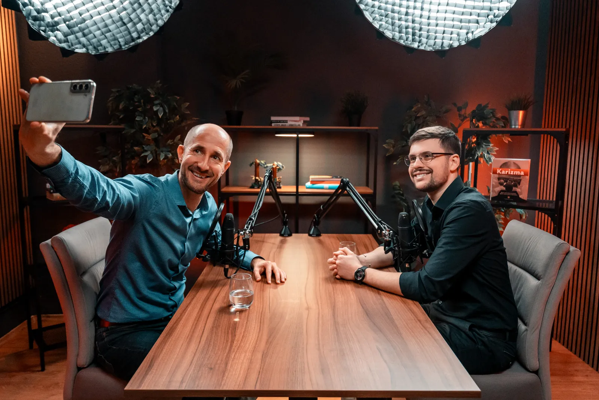
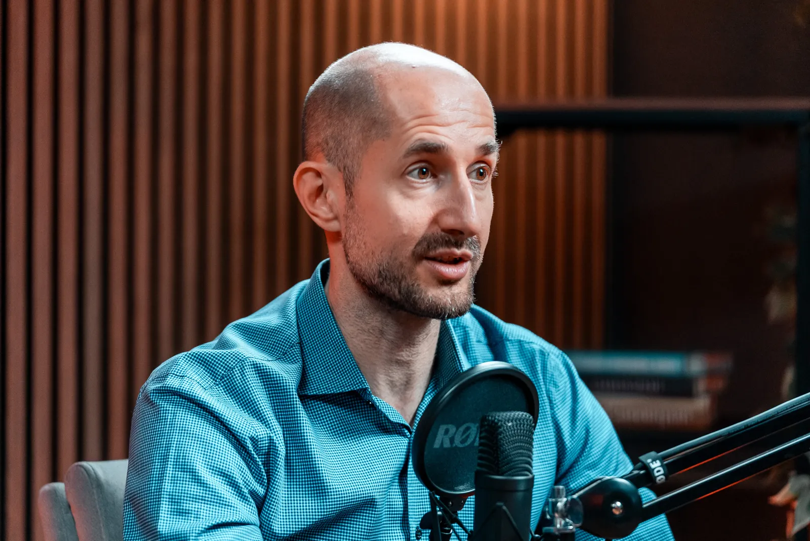
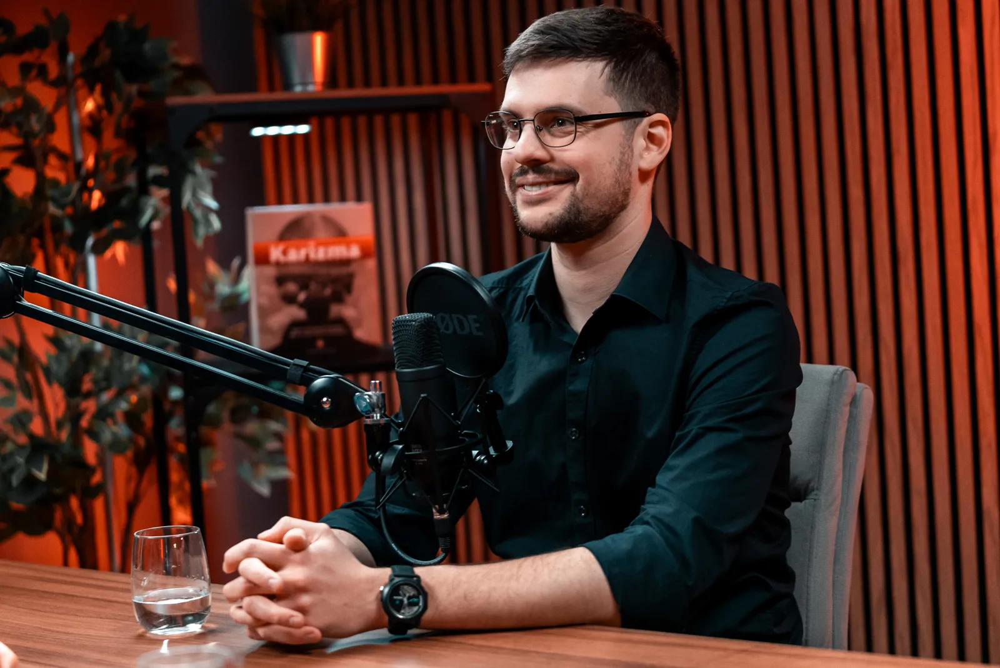

Kaltenecker Kristóf, a Nova Produkciós Iroda alapítója Bolya Imrével beszélget arról, miért a bizalom lett az új olaj, és hogyan épít egy cégvezető olyan személyes márkát, ahonnan nem kell szabadságra mennie.

Miről szól a beszélgetés
Kristóf története 2018-ban, egy pécsi kollégiumi szobában indul. Egy kétségbeesett anyuka hívta, hogy a másfél éves, SMA-val élő kisfiának, Zentének 700 millió forintos gyógyszerre van szüksége, méghozzá a második születésnapja előtt. A videó megosztása után két héttel a közösségi finanszírozás segítségével össze tudtuk gyűjteni az összeget a Zolgensma-kezelésre. Innen jön Kristóf alaptétele: a figyelem már régóta értékes valuta, de az igazán szűkös erőforrás ma a bizalom. A cégvezetőnek ezért éri meg személyes márkát építeni. Aki szakértőként és emberként hitelesen szólal meg, azt hívják előadni, vele rövidebb az út az üzletkötésig, és a márkája felnagyítja azt, ami amúgy is benne van, a bőkezűséget éppúgy, mint a gyors haszon vágyát.

A második felében Kristóf a kezdők gátjait bontja le. Először egyetlen mondatot kell leírni arról, mit gondoljon rólunk a közönség, aztán három tartalompillért választani: a saját élettapasztalatot, azt, amit szívesen csinálunk, és a közönség mai elakadásait. Képet kapni a saját kamera előtti magabiztosságodról egy végtelenül egyszerű feladattal indul. Rögzíts egy ötperces videót, aludj rá, majd hallgasd csak a hangot, nézd némán a testbeszédet, és olvasd el a leiratot.
Az AI szerinte öt-nyolc hónapon belül felhőréteget von a kezdők és a bejáratott márkák közé. A személyes márkába fektetett energia, idő és tőke jelenleg még nagyjából hússzoros megtérüléssel bír. Ez fél éven belül sokkal alacsonyabb lesz.

„Az új olaj, amiből egyre kevesebb van, az a figyelem után az a bizalom.”
Kaltenecker Kristóf
„Az, hogy építünk egy márkát, és annak a középpontjában mi állunk, az egyik legjobb önismereti út, amin végigmehetsz.”
Kaltenecker Kristóf
„Abban a pillanatban, hogy minden információ a rendelkezésemre áll, és akkor hozom meg a döntést, elkéstem.”
Kaltenecker Kristóf

Ha szeretnél még mélyebben belelátni abba, hogyan gondolkodom a jövőről, ez a beszélgetés erre való. Az epizódban nem csak a Nova víziójáról mesélek, hanem azokról a döntésekről, kételyekről és tapasztalatokról is, amelyek idáig vezettek.
Kulisszatitok: Imivel egy networking eseményen ismerkedtünk meg. Ő éppen egy panelbeszélgetést hallgatott, én mellé ültem, és a podcastekről kezdtünk beszélgetni. Kiderült, hogy neki saját műsora van, mi pedig addigra nagyjából két-háromezer podcastepizódot gyártottunk le az ügyfeleinknek. Ebből a szinte véletlen beszélgetésből lett a mai stratégiai partnerségünk, és ez az epizód.